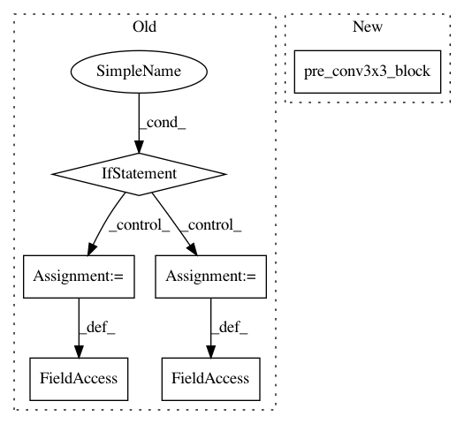

b09aa5e617f2a61a4ec908ba297aa2b8ab8e0a12,pytorch/pytorchcv/models/others/oth_revnet2.py,RevBottleneck,__init__,#RevBottleneck#Any#Any#Any#Any#Any#,401
Before Change
def __init__(self, inplanes, planes, stride=1, downsample=None, noactivation=False):
super(RevBottleneck, self).__init__()
if downsample is None and stride == 1:
Gm = BottleneckSub(inplanes // 2, planes // 2, stride, noactivation)
Fm = BottleneckSub(inplanes // 2, planes // 2, stride, noactivation)
self.revblock = ReversibleBlock(Gm, Fm)
else:
self.bottleneck_sub = BottleneckSub(inplanes, planes, stride, noactivation)
self.downsample = downsample
self.stride = stride
def forward(self, x):
After Change
self.conv1 = conv1x1(
in_channels=in_channels,
out_channels=mid_channels)
self.conv2 = pre_conv3x3_block(
in_channels=mid_channels,
out_channels=mid_channels,
stride=stride)
self.conv3 = pre_conv1x1_block(
in_channels=mid_channels,
out_channels=out_channels)
In pattern: SUPERPATTERN
Frequency: 3
Non-data size: 6
Instances
Project Name: osmr/imgclsmob
Commit Name: b09aa5e617f2a61a4ec908ba297aa2b8ab8e0a12
Time: 2019-03-11
Author: osemery@gmail.com
File Name: pytorch/pytorchcv/models/others/oth_revnet2.py
Class Name: RevBottleneck
Method Name: __init__
Project Name: osmr/imgclsmob
Commit Name: 4c252770d83c50e207371d74db626767785a40b7
Time: 2020-04-02
Author: osemery@gmail.com
File Name: chainer_/chainercv2/models/preresnet.py
Class Name: PreResUnit
Method Name: __init__
Project Name: osmr/imgclsmob
Commit Name: 4c252770d83c50e207371d74db626767785a40b7
Time: 2020-04-02
Author: osemery@gmail.com
File Name: gluon/gluoncv2/models/preresnet.py
Class Name: PreResUnit
Method Name: __init__